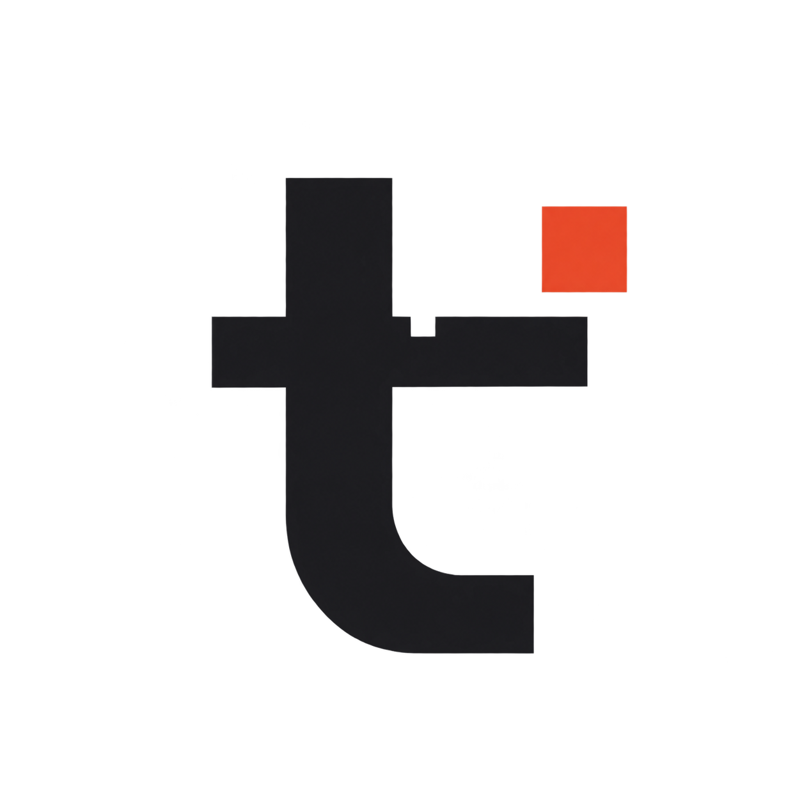
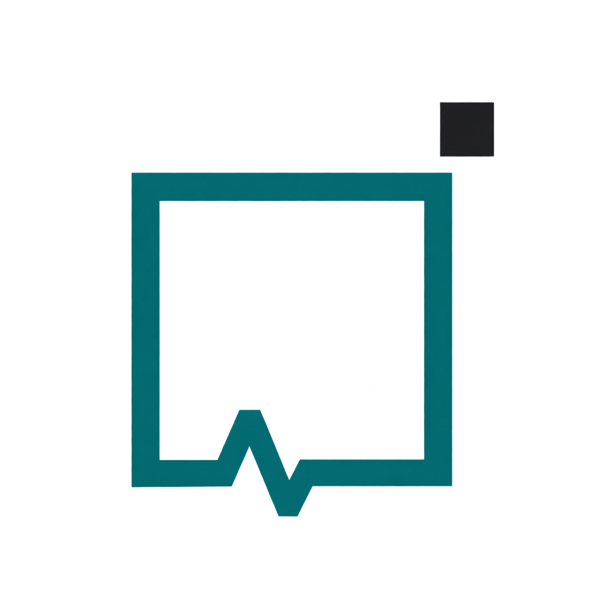
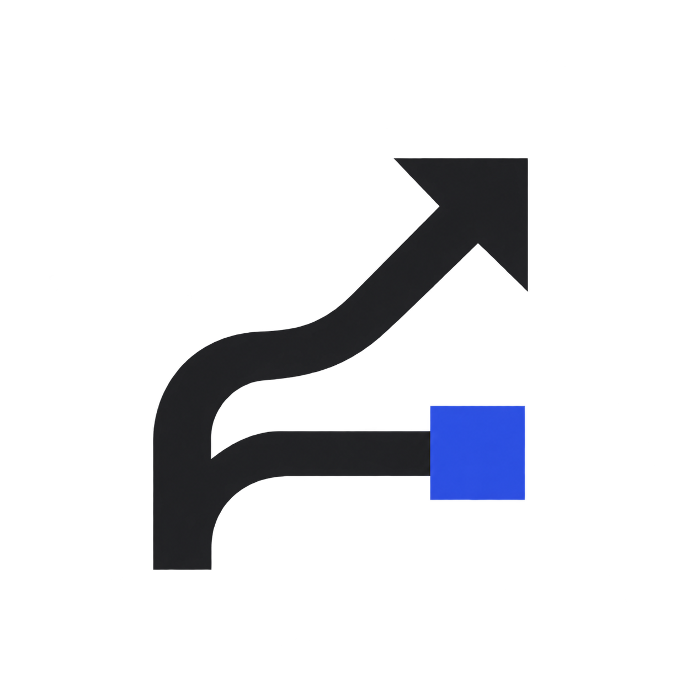
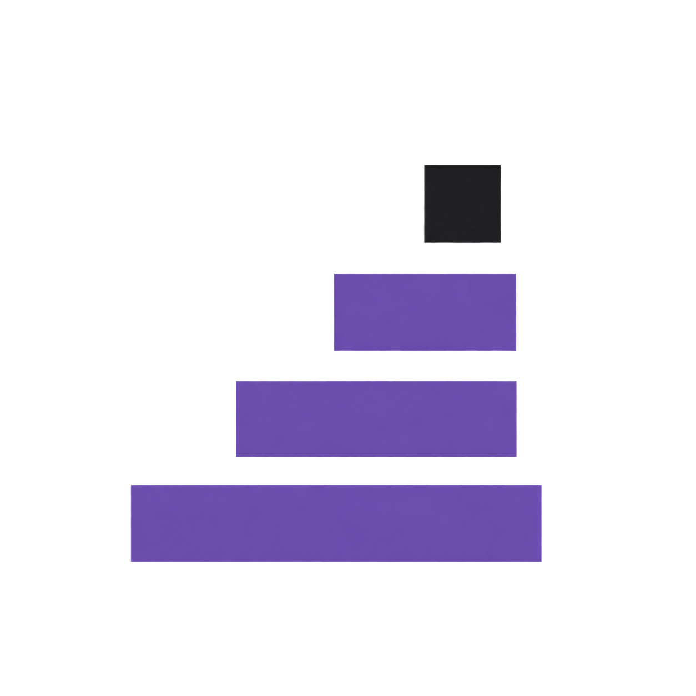

在 DSH 的「插件 → 发现 → 添加索引源」中添加：
https://tangyixiao.github.io/dsh-plugin-market/index.json
明确选用预览版本：预览渠道索引；稳定渠道索引。主索引的自有稳定 pin 保持独立。
公开预览：ZCode Plan Bridge · WorkBuddy 社区版。ZCode Community Retry 0.3.3 是 ZCode 原生插件，按其发布说明安装。
收录条目、精确版本及兼容范围见索引和 DSH 安装确认页。

Provider Doctor
PR & Release Workspace
Version Manager以上是项目入口；是否收录、可安装版本及兼容范围以对应渠道索引为准。
正在读取本次构建统计……
本市场校验索引格式与安装目标，没有安装或沙箱测试收录插件。来源方的验证声明保留原归属和适用版本；完整来源、冲突与未展示声明见 构建溯源报告。收录与安装验证分别看待。
Hub 的原创翻译与验证信息按其非商业转载条款保留出处；各插件仍适用原作者许可证。